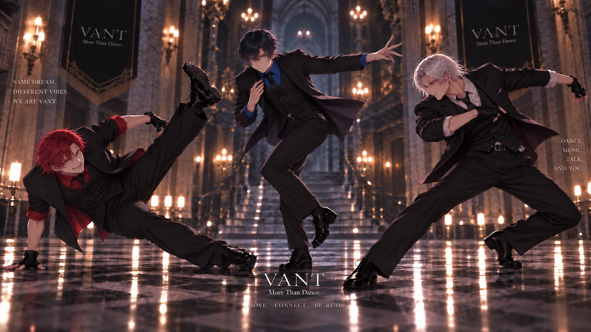

TOP / SCHEDULE / NIGHT SESSION #18
NIGHT
SESSION #18
金曜20時からのオンラインライブ。今回はセットリストを組み替えて、3人それぞれのソロ枠を長めに取ります。
このページはダミーです。日程・時間・視聴方法はすべてサンプル表示で、申込はできません。

DATE2026.09.12
金曜開催（ダミー）。
START20:00 JST
本編約60分、アフタートークあり。
FORMATONLINE LIVE
ZATAGRAM 配信（ΛLLY はアーカイブ視聴可）。
TIMETABLE
OPEN配信ページ公開・待機画面ダミー
SET 013人でのオープニングセット約20分
SOLOWAKA / INA / KUMA ソロ枠約25分
AFTER TALKコメントを読みながらのトーク約15分
HOW TO WATCH
FREE本編のみ
誰でもリアルタイムで視聴できます。
ΛLLYアーカイブ + 楽屋
終演後のバックステージ映像つき。
ARCHIVE2週間
公開期間はダミー設定です。